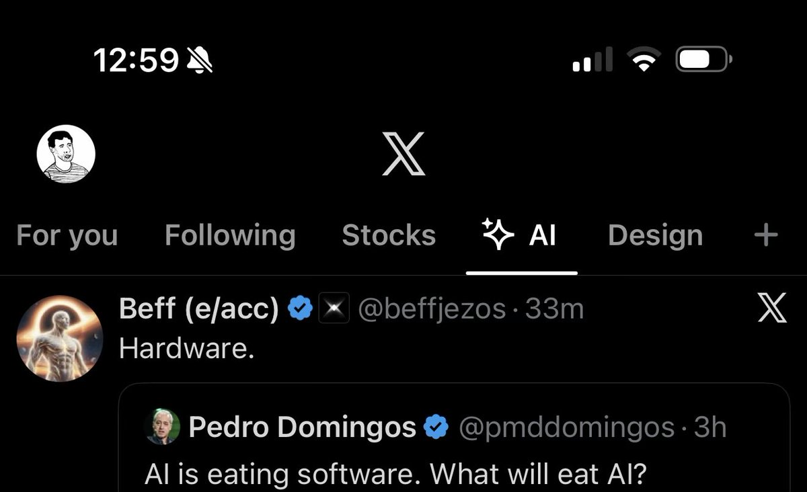

Dear Nikita Bier,
I hope you're doing well. I am reaching out as a last resort regarding the permanent suspension of monetization on my account @XUEQIUxka.
The sensitive label was a system error and has been removed, but my appeals were still denied. My content is fully compliant — no adult or violating material.
Monetization is my only source of income. I am recovering from major surgery and managing chronic health conditions. Without this income, I cannot afford necessary medication and medical care, which are essential for my health and survival.
This account is my fresh start as a positive figure in the Chinese transgender community. I am fully committed to X's guidelines and creating uplifting content.
I humbly ask for your help with a manual review to restore my monetization. It would mean the world to me.
Thank you sincerely for your time and compassion.
Best regards,
XUEQIUxka (@XUEQIUxka)

I hope you're doing well. I am reaching out as a last resort regarding the permanent suspension of monetization on my account @XUEQIUxka.
The sensitive label was a system error and has been removed, but my appeals were still denied. My content is fully compliant — no adult or violating material.
Monetization is my only source of income. I am recovering from major surgery and managing chronic health conditions. Without this income, I cannot afford necessary medication and medical care, which are essential for my health and survival.
This account is my fresh start as a positive figure in the Chinese transgender community. I am fully committed to X's guidelines and creating uplifting content.
I humbly ask for your help with a manual review to restore my monetization. It would mean the world to me.
Thank you sincerely for your time and compassion.
Best regards,
XUEQIUxka (@XUEQIUxka)

If you want to keep track of the latest AI model releases, pin the AI custom timeline. It’s personalized for you, ranked and labeled by Grok. The best way to monitor the situation as it’s happening. https://t.co/E54JkKsAi7